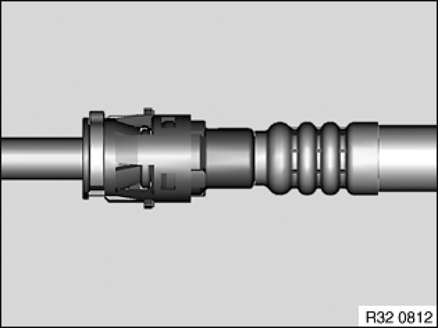
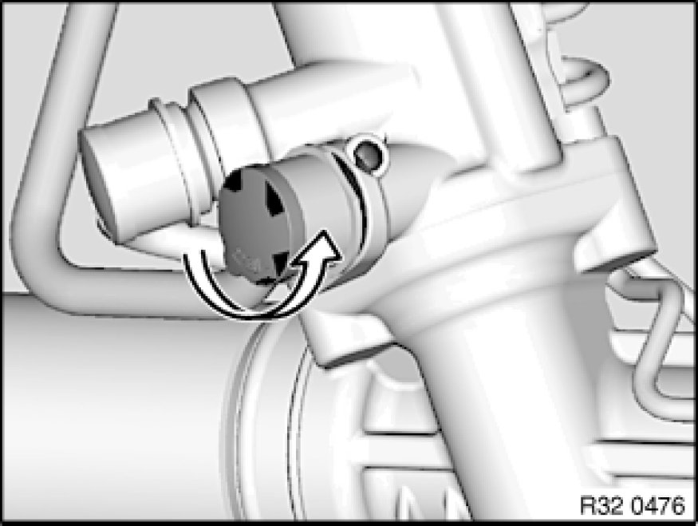

Replacing Return Line for Power Steering (M47T2/M54/M57TU/M57T2/N46/N52)
32 41 351 - Replacing return line for power steering (M47T2/M54/M57TU/M57T2/N46/N52)

Warning!
Danger of poisoning 00 .. ... Danger of Poisoning If Oil Is Ingested/Absorbed Through the Skin if oil is ingested/absorbed through the skin!
Risk of injury 00 .. ... Risk of Injury If Oil Comes Into Contact With Eyes and Skin if oil comes into contact with eyes and skin!
Important!
Adhere to the utmost cleanliness. Do not allow any dirt to enter the hydraulic system.
Close off pipe connections with plugs.

Recycling:
Catch and dispose of hydraulic fluid in a suitable container.
Observe country-specific waste-disposal regulations

Necessary preliminary tasks:
- Draw off and dispose of hydraulic fluid from fluid reservoir
- X3 3.0Sd: Remove acoustic cover
- Remove front underbody protection Removing and Installing/Replacing Front Underbody Protection
- Remove reinforcement plate Service and Repair
- Diesel engines: Partially detach steering gear cover
- M54, N52: Remove intake filter housing with fresh-air duct

Release quick-connect coupling Notes on Hydraulic Line with Quick-Connect Coupling and seal power steering coil connection with a suitable plug.
Installation Note:
Make sure return line is laid without tension and with sufficient spacing to adjoining components.

Expose return line up to connection on power steering gear.

Release FCD coupling Notes on Removing/Installing FCD Clutches and disconnect return line.
After installation:
- Fill and bleed hydraulic system Service and Repair
- Check pipe connections for leaks